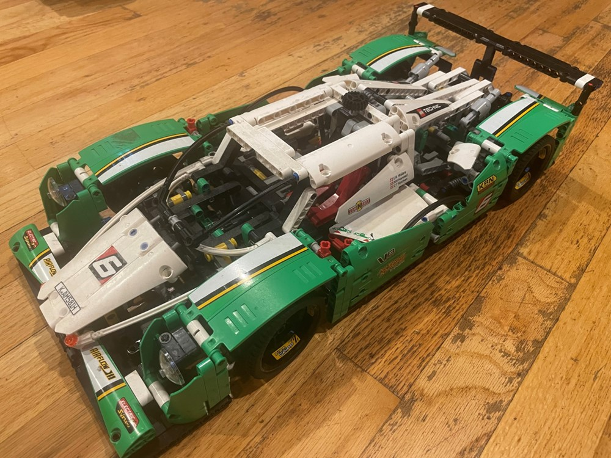
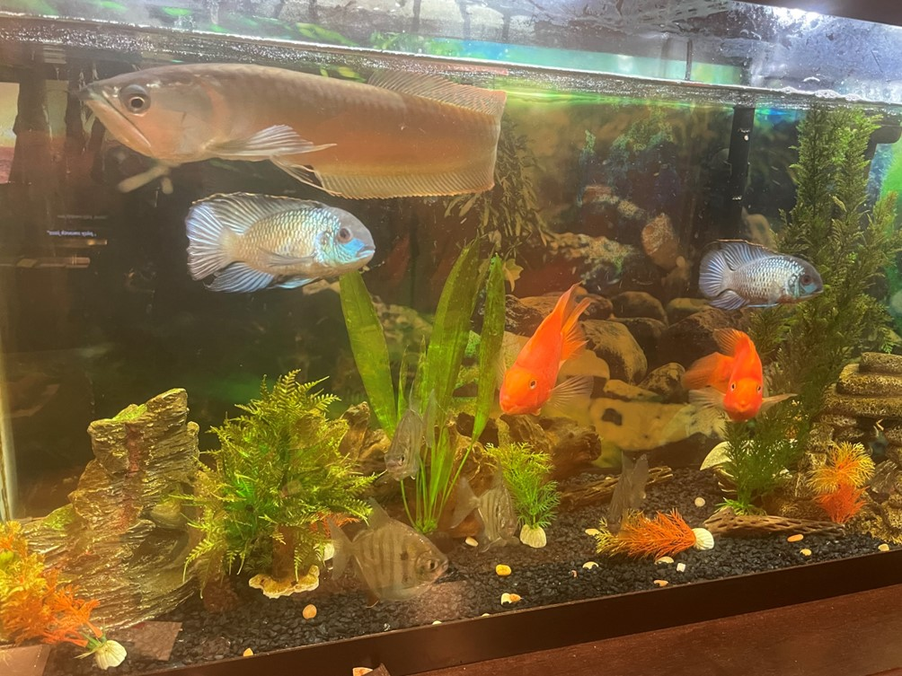
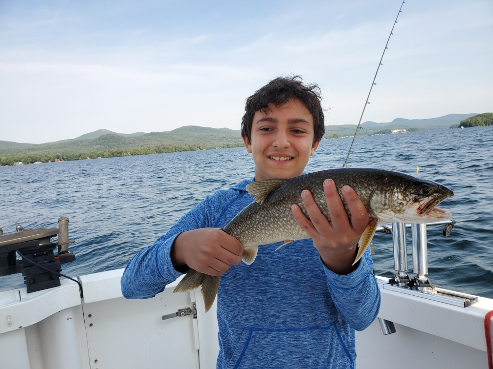

Welcome to my About Me page!
THE comprehensive guide to understanding Josh Rovensky (it's easy.)
I'm Josh, a student at Staten Island Technical High School. I live in Staten Island, I'm 15 years old, and I'm an only child. The first thing you need to know about me is that I'm ACTIVE. I constantly need something to keep me occupied, because I absolutely hate boredom. Luckily for me, I'm spoiled for choice. I have a poodle mix named Jerry, as well as a foot-long fish(!) As a child, I wanted to be a zookeeper. I guess you could say I've become one anyway with the amount of pets I have. On this page are a few of my favorite hobbies and details about my life:
Here are some of my favorite pastimes, and they're unconventional to say the least. I guarantee they'll surprise you.
- Fishing! Both in Staten Island and abroad (I'll get to that later), I've tried to fish every body of water I've come across. Some of my best moments have been on fishing charters, but nothing beats the feeling of finding your own spot and being successful. I'd say my best catch was a group of fifteen-pound yellowtail jacks off the coast of Panama.
- Traveling! No matter where it is, I love going somewhere. Sudden weekend trips are always free in my schedule, especially short drives to upstate NY. I can actually stand road trips, and I've been on multiple across the East Coast. I'm especially proud to have been to some truly unique regions of the world, including Australia, South Africa, and the Galapagos Islands. Every time, I discover something new about myself. Whether these vacations go well or not is a different story.
- Watching documentaries and reading articles! Okay, that one doesn't deserve an exclamation point, does it? Whenever I find something that intrigues or surprises me, I go DEEP into that topic. It's gotten to the point that I actively search for obscure facts or historical records (I'm definitely not a conspiracy theorist).
Here are some of my potential career interests, listed in order of most interest to me. That being said, any of these would be a dream job for me.
- Any type of engineering. Mechanical and robotic functioning have always impressed me. The amount of effort and creative thinking it takes to implement something truly effective is a challenge I'd want to take on. My collection of LEGO Technic sets makes this obvious. Automotive engineering is particularly appealing, because it makes real changes in the world. My eventual dream would be to design a chassis or motor for an automaker that has real success with consumers.
- Graphic design or programming. It might seem like an odd grouping, but they both allow me to have creative liberty. It satisfies me to see my plans be finished or implemented (the same is true for this HTML page). I'm also a visual learner, which helps me in these fields. Luckily, the courses I'm taking now cover both of these options.
- Intellectual property law. There's always a chance that I won't be able to get myself involved in a creative field like engineering, programming, or graphic design. So why not help others bring their creations to the reality? In a market, a patent is an extremely important measure to take for your product. I'd like to assist people in patenting their various inventions. It's a good cause, and I'm sure that it'll be interesting to review a variety of products.
My favorite site to play around with when I'm bored. 26 models to choose from and SO MANY OPTIONS!
Here's my best LEGO Technic set:

Here's some of my fish:

Here's one of my favorite catches.

Thank you for reading my About Me page!